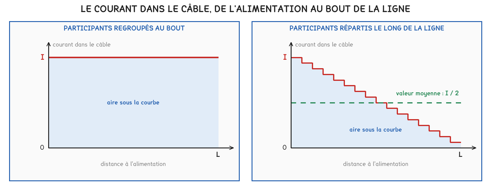
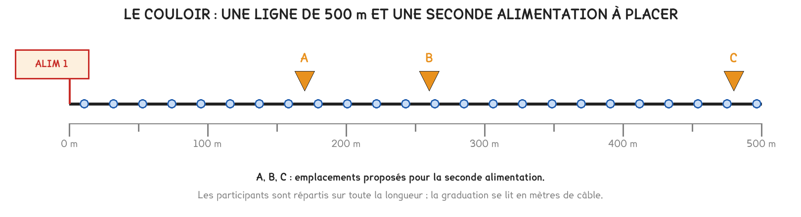
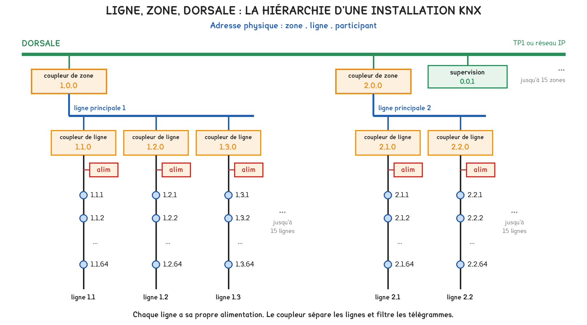
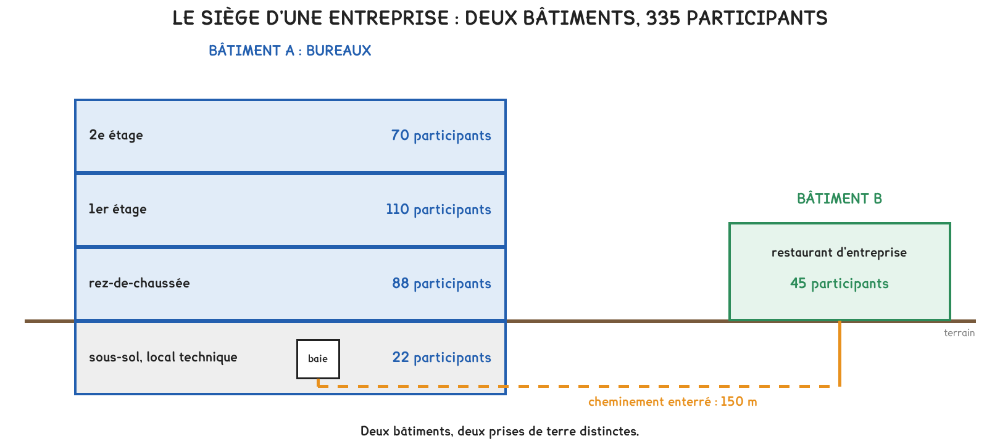
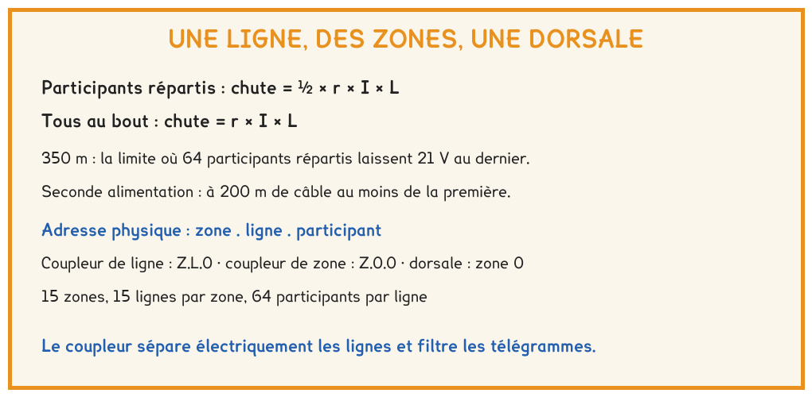

BTS FED option C · 1re année
La limite des 350 m ne s'apprend pas, elle se calcule, à condition de connaître l'hypothèse qui la porte. Au-delà de 64 participants, les lignes se regroupent en zones reliées par des coupleurs, et chaque appareil reçoit une adresse qui dit où il se trouve.
1 outil · 6 questions · 4 exercices · 2 replis · 6 figures
Savoirs travaillés
La séance 4 a calculé la chute de tension lorsque tout le courant traverse le câble. Celle-ci l’a appliquée à une ligne entière, puis a organisé plusieurs lignes en une installation complète, jusqu’au plan d’adressage d’un bâtiment.
Le câble du bus alimente les participants, et chacun prélève son courant au passage. Si tous sont regroupés au bout, tout le courant traverse toute la longueur. S’ils sont répartis, le courant diminue en chemin.

ΔU = ½ × r × I × L
Pour des participants répartis régulièrement. S’ils sont tous regroupés au bout, le facteur ½ disparaît : ΔU = r × I × L.
Avec 64 participants répartis et 640 mA, une ligne de 350 m laisse un peu plus de 21 V au dernier participant. La limite des 350 m est une chute de tension, et elle se mesure depuis l’alimentation.
Le calcul suppose des participants répartis. Une ligne dont les participants sont regroupés loin de l’alimentation peut respecter les 350 m et ne pas fonctionner : la règle tombe dès que l’hypothèse tombe.
Pour aller plus loin
Au lieu de vérifier 350 m, il est possible de chercher la longueur qui laisse exactement 21 V au dernier participant. Le budget vaut 30 − 21 = 9 V, et la longueur se tire de la formule :
L = 2 × 9 / (r × I) pour des participants répartis, L = 9 / (r × I) s’ils sont tous au bout.
La KNX Association retient une valeur un peu inférieure au résultat : l’écart couvre ce que le calcul ne voit pas, les raccordements, l’échauffement du câble, une répartition moins régulière que prévu.
Une ligne longue peut recevoir une seconde alimentation, à condition qu’elle se trouve à 200 m de câble au moins de la première. Chaque participant doit alors se trouver à 350 m au plus d’une alimentation. Deux règles s’appliquent en même temps, et la plus contraignante décide.

Une ligne porte 64 participants et sa propre alimentation. Jusqu’à 15 lignes se raccordent à la ligne principale d’une zone par des coupleurs de ligne ; jusqu’à 15 zones se raccordent à la dorsale par des coupleurs de zone.

| Champ de l’adresse | Valeurs | La valeur 0 désigne |
|---|---|---|
| Zone | 0 à 15 | la dorsale |
| Ligne | 0 à 15 | la ligne principale de la zone |
| Participant | 0 à 255 | le coupleur de la ligne, ou de la zone |
L’adresse physique zone.ligne.participant dit où se trouve un appareil. Le coupleur de ligne porte l’adresse Z.L.0, le coupleur de zone l’adresse Z.0.0.
Le numéro de participant va jusqu’à 255, mais une ligne ne porte que 64 participants sans répéteur. Une adresse comme 1.16.3 est impossible : le numéro de ligne ne dépasse pas 15.
Le coupleur sépare électriquement les lignes : chacune a sa propre alimentation, et une panne reste locale. Il filtre les télégrammes de groupe : il ne transmet de l’autre côté que ceux qui y sont attendus.
Un télégramme court occupe le bus pendant 20 ms environ : une ligne en transporte au plus une cinquantaine par seconde. Sans filtrage, le trafic de toutes les lignes s’additionnerait sur chacune.
Pour aller plus loin
Dans un grand bâtiment, tout le trafic entre zones et toute la supervision passent par la dorsale. À 9 600 bit/s, elle devient le goulet d’étranglement.
Un coupleur IP remplace alors le coupleur de zone : la dorsale devient un réseau Ethernet à 100 Mbit/s, environ dix mille fois plus rapide, qui franchit aussi les distances entre bâtiments par la fibre optique.


Exercice · D2-1
Une ligne KNX TP1 porte 50 participants répartis régulièrement sur 280 m, depuis son alimentation de 30 V. Chaque participant consomme 10 mA.
Quelle tension reste-t-il au dernier participant ?
Exercice · D2-1
Un local isolé regroupe 40 participants, tous au bout d’une liaison en câble TP1 depuis l’alimentation.
Quelle longueur de liaison, au plus, laisse encore 21 V à ces participants ?
Exercice · D2-1
Sur le plan d’une installation, un appareil porte l’adresse physique 3.4.0.
De quel appareil s’agit-il ?
Exercice · B8-1
Un maître d’ouvrage demande pourquoi le restaurant d’entreprise, situé à 150 m des bureaux, forme une zone distincte raccordée par la dorsale IP, au lieu d’une ligne supplémentaire tirée en câble bus. Répondre en quatre lignes.
La séance 6 prolonge la dorsale IP : le réseau informatique du bâtiment, son plan d’adressage IP et ses commutateurs. L’adresse de groupe, qui décide de ce qu’un coupleur laisse passer, sera traitée en semaine 11.
Cette page rappelle la séance. Elle ne remplace pas le polycopié et ne donne aucun corrigé. Tous les calculs se font dans votre navigateur ; rien n'est enregistré.